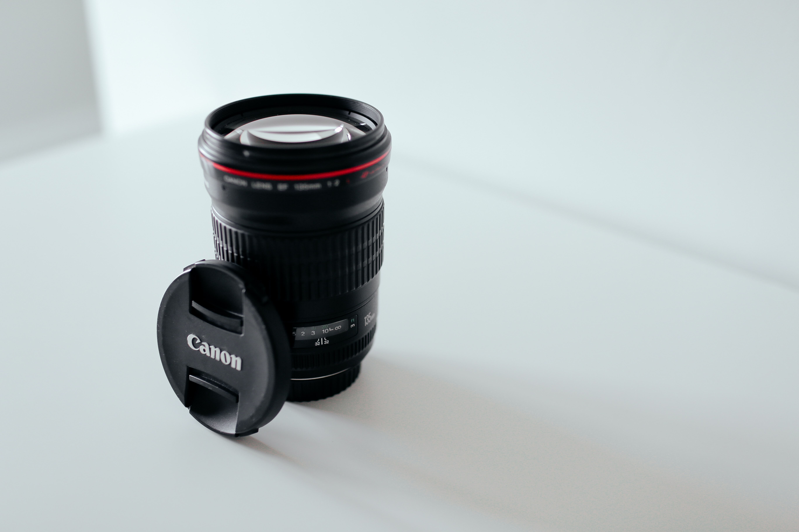

DSLR or Mirrorless?
Read more

There are four main types of digital camera: compact, bridge, DSLR and mirrorless cameras. DSLRs and mirrorless models have interchangeable lenses. The type you go for will depend on a number of factors, including what you want to photograph or film, how portable you want it to be and the image quality you're looking for. Typically called a point-and-shoot, a compact camera has a fixed lens and is small enough to carry in a pocket or small bag. The best compact cameras offer a good compromise between features and price, and are often ideal all-rounders. But choose the wrong model and you can end up with a flimsy camera that takes out-of-focus snaps. If you want superior image quality and interchangeable lenses, without the bulk of a DSLR, a mirrorless camera - also known as a compact system camera - is a solid choice. Smaller and technically more advanced than a DSLR, they offer professional-level features, such as 4K video or fast continuous shooting. However, they don’t have as many lenses or accessories available compared with DSLRs. If you want to have more professional control over your photography and the best possible picture quality, there’s no substitute for a DSLR camera. Also referred to as digital SLR (single-lens reflex) cameras, DSLRs tend to be expensive but they're very flexible, allowing you to change lenses to suit and control every aspect of your photography. Compact camera prices range from £60 for a cheap point-and-shoot model to around £1,200 for a top-of-the-line camera. The average price for a Best Buy compact camera is £805, but you can still find a top-rated compact model for around £450. The best waterproof cameras range from £149 to £399. You can find bridge cameras for less than £200, but spending more will generally get you a larger or more capable sensor, and a longer or more versatile zoom lens. Our Best Buy bridge cameras start at £500 and go up to £1,200. System cameras, such as mirrorless/compact system cameras and DSLRs, cost anywhere from around £300 for an entry-level model, up to an eye-watering £5,000 and beyond for high-end cameras. Our Best Buy mirrorless cameras range from £442 to £4,199, although the top end buys you the kind of camera that professional photographers aspire to.